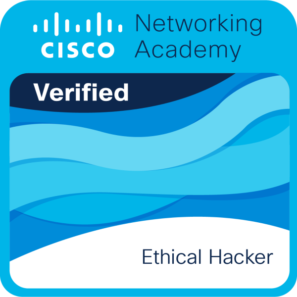
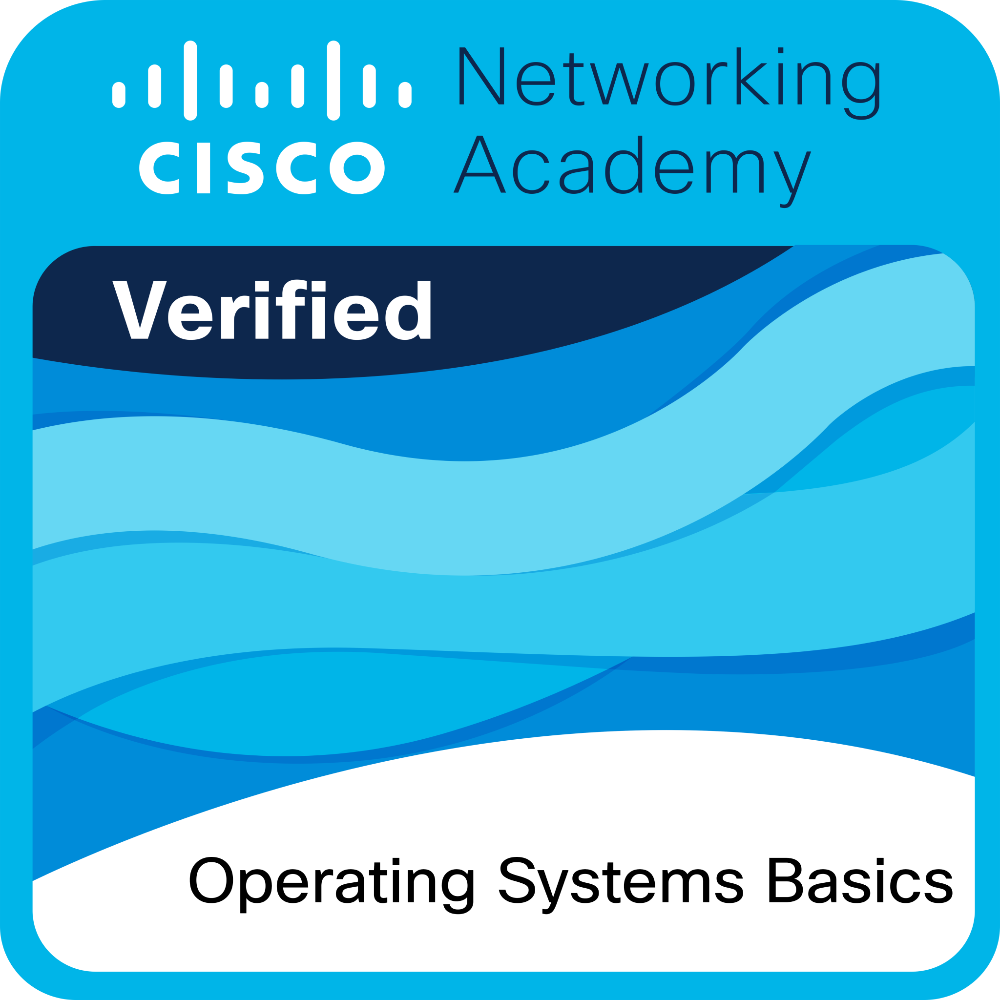

Jodelyn Banatanto Millesca
Partido State University • Bachelor of Science in Information Technology • BSIT 4D
Certificates & Badges
Find Insights with AI
Completed: 01 Oct 2026
Learning how to find insights with AI made me realize how exciting it is to look at messy data and turn it into clear answers...
Build Your Resume with AI
Completed: 01 Oct 2026
Using AI to build a resume taught me how to highlight my true strengths without second-guessing myself...
Prompt Like an Engineer
Completed: 01 Oct 2026
This course showed me that talking to AI is an actual skill. By learning how to structure my questions properly...
Junior Cybersecurity Analyst Career Path
Completed: 01 Oct 2026
Finishing this career path felt like putting together a huge puzzle of how digital defense works...

Ethical Hacker
Completed: 11 Sep 2026
Learning how hackers think was a real eye-opener. Instead of just studying how to build secure systems...
Cyber Threat Management
Completed: 11 Sep 2026
This topic taught me that waiting for problems to happen is never a good idea...
Computer Hardware Basics
Completed: 01 Sep 2026
Understanding computer hardware helped me get comfortable with the physical parts that make computers work...

Operating Systems Basics
Completed: 27 Aug 2026
Getting the hang of operating systems gave me a solid grasp of how Windows and Linux manage files...
Introduction to Modern AI
Completed: 24 Aug 2026
Exploring modern AI opened my eyes to how machine learning and smart models actually operate...
Introduction to IoT and Digital Transformation
Completed: 23 Aug 2026
Learning about the Internet of Things showed me how everyday objects can connect and share data...
IT Customer Support Basics
Completed: 21 Aug 2026
This course reminded me that having technical skills is only half the job; listening well and communicating...
Introduction to Cybersecurity
Completed: 20 Aug 2026
Starting with this cybersecurity introduction gave me a strong appreciation for why keeping digital information safe matters...
Overall Learning Summary
Continuous Growth as a BSIT Student
Looking back at everything I have learned as an IT student at Partido State University, earning these Cisco certificates has been an amazing way to connect what I study in class with real-world skills. From learning how to keep systems secure and understand hardware to exploring AI and helping people solve technical problems, this journey has helped me grow not just as a student, but as someone genuinely excited to build a future in technology.